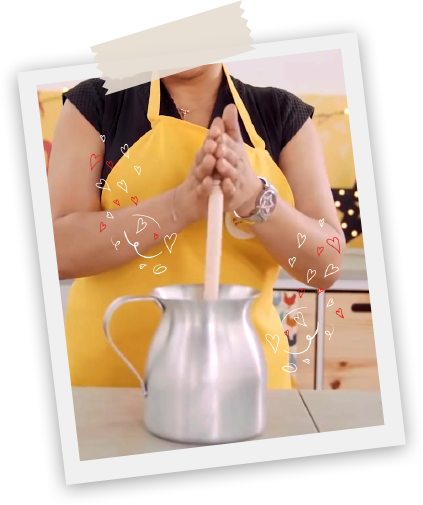
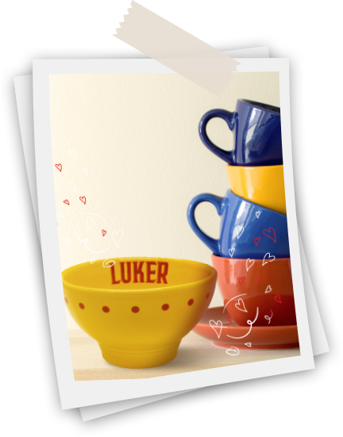
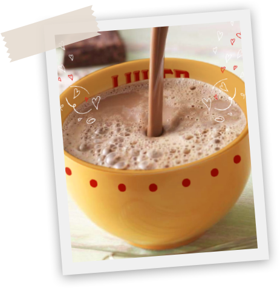

¡Pon una canción que te recuerde a tu casa!
Llama a mamá. Si es al teléfono fijo, mejor. Eso despierta la nostalgia. No olvides decirle “Mami”, o de la forma más cariñosa posible.
Pregúntale cómo es que ella hacía el Chocolate Luker. Escucha atentamente todas las instrucciones. Toma apuntes si es necesario.

Prepara un Chocolate Luker siguiendo al pié de la letra las instrucciones de mamá.

Busca una taza especial. Muy buenas opciones son las tazas amarillas de Luker, o la que te llevaste de tu casa el día en que te fuiste a vivir solo. O la más viejita que tengas.

Sirve en la taza el Chocolate Luker lo más caliente y espumoso que puedas.
Toma la taza con las dos manos. Da un buen sorbo.